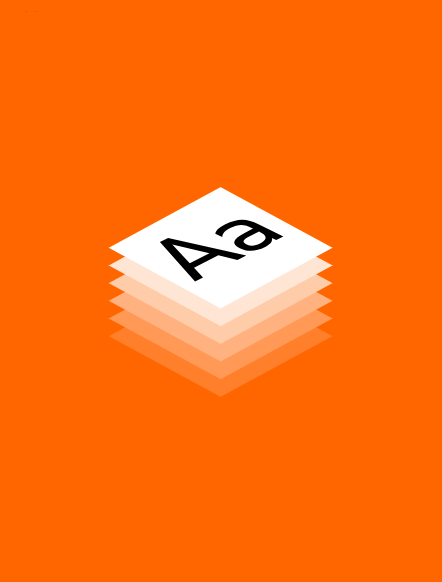
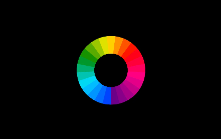
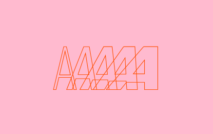
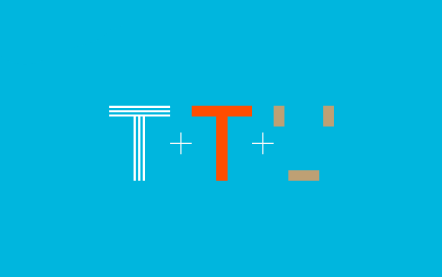
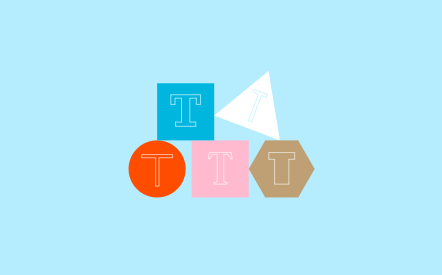
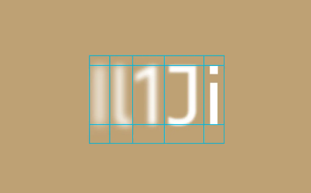
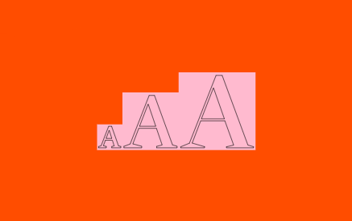
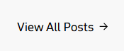
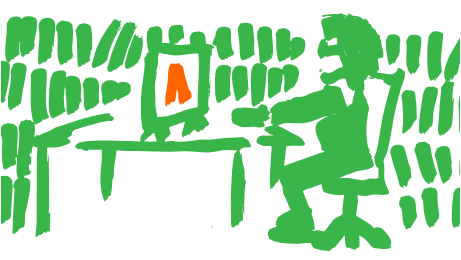
9 Jun 2026
Announcements
Typotheque is looking for a junior graphic designer, 2–3 days/week to design type specimens.
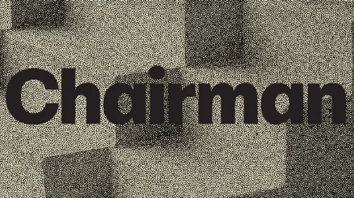
8 Jun 2026
New fonts - Announcements
Chairman is a utilitarian neo-grotesque that grows quieter at headline sizes and sparkier in running text, with three width systems that shape the rhythm of paragraphs.

21 May 2026
by Héctor MangasResearch
Today, in celebration of Global Accessibility Awareness Day, we are launching accessibility.tools — a free toolkit built for designers who want to create more inclusive work.
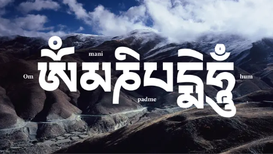
21 May 2026
New fonts - New articles
We already support 26 writing scripts, and today we add another: Tibetan, created in the 7th century to translate Buddhist texts, has barely changed since — while the spoken language has shifted dramatically.